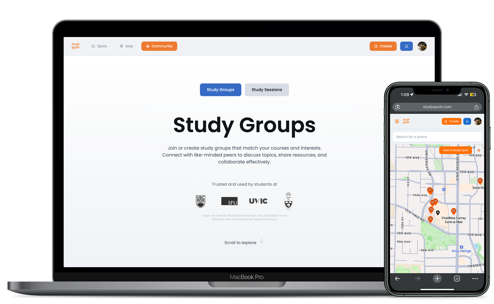

Project Overview
Study Spotr is a full-stack web application developed to assist users in discovering the best study environments based on their preferences. Designed to address the common challenge of finding study spots that suit various needs such as quietness, available seating, Wi-Fi, and ambiance. The app enables users to set preferences, view spot ratings and comments, and add spots to share with other users. Built with a focus on user experience, the interface is intuitive, catering to individuals from different backgrounds, whether students or professionals seeking productive workspaces.

Problem and Objective
Finding a suitable study environment can be challenging and often impacts productivity and focus. Research indicates that noise levels, overcrowding, and lack of amenities are common factors that make study spaces less conducive to effective work. Our goal was to create a user-friendly app that helps individuals locate ideal study spots based on their preferences, addressing key needs like quietness, available seating, and accessibility to boost study efficiency and comfort.
Skills & Tools
- Project Purpose: I collaborated on solving the challenge of finding ideal study locations for students in urban environments by contributing to the development of accessible, user-centric features.
- Timeframe: September 2024 - ongoing
- Accessibility: I focused on designing and implementing accessible features, including clear iconography, adaptive layouts, and location filters to enhance ease of use for both busy and quieter spaces.
- UI/UX Design: I contributed to crafting user-friendly navigation and intuitive interfaces, ensuring diverse user preferences for study environments were met effectively.
- Front-End: React.js | Tailwind CSS
- Back-End: Node.js | MongoDB | AWS
- Tools: Mapbox API | GitHub | VSCode | Vercel
- My Role: As a co-developer, I created front-end components, optimized back-end data flow, and integrated the Mapbox API for location-based services.
Process & Solution
Goals:
- I designed an intuitive UI for finding ideal study spots based on user preferences.
- I implemented location-based search and filtering features to enable users to quickly identify suitable study spaces.
- I prioritized accessibility to ensure ease of use across different audiences, including students with varied study preferences.
Key Decisions:
- I integrated a location-based search option with customizable filters (quiet spots, Wi-Fi, white boards) to allow users to easily find a suitable study environment.
- I implemented the Mapbox API to provide real-time location and distance data to allow users to see how far they are from different work spots.
- I designed a clean, high-contrast interface with clear, accessible icons to simplify navigation, enabling users to explore and save their preferred locations intuitively.
Initial Phases and Iterations:
In Study Spotr's early phase, I prioritized implementing core features like location-based filtering to help users find ideal study and work spots. I developed an initial interface using the Mapbox API, integrating basic search functionality with accessible navigation. While working on this phase, I encountered challenges with filtering accuracy and map integration, which I identified as key areas for improvement in later versions.

Map interface showing study locations
Second Iteration and Refinements:
During the second iteration, I refined the interface and strengthened the integration between the front-end and back-end systems. I improved filter accuracy by fine-tuning parameters, enhanced map responsiveness, and redesigned navigation to provide a more intuitive user experience. These refinements resulted in faster, more precise results, aligning user inputs more effectively with relevant study spot options.

Detailed view of Mink Cafe study spot
Challenges and Adaptations:
One of the main challenges I faced was ensuring accurate filtering and improving map response times. To address these issues, I fine-tuned filter parameters and restructured the integration between the Mapbox API and the back-end, significantly improving performance and reliability.

Comprehensive map view of all study locations
Final Outcome:
Although Study Spotr is still a work in progress, I have solidified key functionalities on the app that make it perfectly usable with a refined integration between the front-end and back-end. My ongoing efforts are focused on enhancing the accuracy and usability of the application to integrate more complex features for users.